操作系统 SJTU 版(1)：概述
Last updated on November 20, 2025 am
这是《操作系统》SJTU-CS3601 课程的课程笔记系列。本文整理部分为“第 1 部分：操作系统概述”。
Lecture 1: 操作系统的演化
操作系统的定义
- 操作系统与应用的关系：
- 服务应用：如提供硬件操作
- 为应用提供计算资源的抽象：进程与线程、虚拟内存、I/O 设备抽象为文件
- 为应用提供线程间的同步：同步原语
- 为应用提供进程间的通信：本地通信机制
- 管理应用：如加载、调度等
- 应用生命周期的管理：应用的加载、迁移、销毁等操作
- 计算资源的分配：线程的调度机制、物理内存的分配、设备的复用和分配
- 安全与隔离：应用程序内部的访问控制机制、应用程序之间的隔离机制
- 服务应用：如提供硬件操作
- 操作系统和硬件的关系：
- 管理硬件：操作硬件以完成功能
- 抽象硬件：应用不关心硬件差异
操作系统的分化
- CPU 分化出两个模式：非特权模式和特权模式
- 非特权模式 ISA：应用可使用的指令和寄存器，包括各种运算指令、通用寄存器等
- 特权模式 ISA：只有操作系统才可使用的指令和寄存器，包括各种特权指令、系统寄存器等
- 从上到下的切换过程通常称为陷入（trap）
- 系统调用：应用调用操作系统的机制，实现应用不能实现的功能
- 应用通过 CPU 的陷入机制进行模式切换（非特权→特权）
- 操作系统内核通过特定的硬件指令返回应用（特权→非特权）
操作系统的不同架构
1. 宏内核
- 整个系统分为内核与应用两层
- 内核：运行在特权级，集中控制所有计算资源
- 应用：运行在非特权级，受内核管理，使用内核服务
- 优点：拥有丰富的沉淀和积累
- 缺点：具有结构性缺陷
- 安全性与可靠性问题：模块之间没有很强的隔离机制
- 实时性支持：系统太复杂导致无法做最坏情况时延分析
- 系统过于庞大而阻碍创新：Linux代码行数已经过 2800 万
2. 微内核
- 设计原则：最小化内核功能
- 将操作系统功能移到用户态，称为"服务"（Server）
- 在用户模块之间，使用消息传递机制通信
- 优点：
- 易于扩展：直接添加一个用户进程即可为操作系统增加服务
- 易于移植：大部分模块与底层硬件无关
- 更加可靠：在内核模式运行的代码量大大减少
- 更加安全：即使存在漏洞，服务与服务之间存在进程粒度隔离
- 更加健壮：单个模块出现问题不会影响到系统整体
- 缺点：
- 性能较差：内核中的模块交互由函数调用变成了进程间通信
- 生态欠缺：尚未形成像 Linux 一样具有广泛开发者的社区
- 重用问题：重用宏内核操作系统提供兼容性，带来新问题
3. 外核
- 不提供硬件抽象：
- 只要内核提供抽象，就不能实现性能最大化
- 只有应用才知道最适合的抽象（end-to-end 原则）
- 不管理资源，只管理应用：
- 负责将计算资源与应用的绑定，以及资源的回收
- 保证多个应用之间的隔离
- 库 OS（LibOS）：
- 策略与机制分离：将对硬件的抽象以库的形式提供
- 高度定制化：不同应用可使用不同的 LibOS，或完全自定义
- 更高性能：LibOS 与应用其他代码之间通过函数调用直接交互
- 优点：
- OS 无抽象，能在理论上提供最优性能
- 应用对计算有更精确的实时等控制
- LibOS 在用户态更易调试，调试周期更短
- 缺点：
- 对计算资源的利用效率主要由应用决定
- 定制化过多，导致维护难度增加
4. 多内核/复内核
- 多内核的背景：多核（OS 内部维护很多共享状态）、异构（GPU 等设备越来越多）
- 多内核的思路：
- 默认的状态是划分而不是共享
- 维持多份状态的 copy 而不是共享一份状态
- 显式的核间通信机制
- 多内核的设计：
- 在每个 core 上运行一个小内核（包括CPU、GPU等）
- OS 整体是一个分布式系统
- 应用程序依然运行在OS之上
Lecture 2: ARM 汇编基础
- 寄存器：x1 - x30 是 31 个 64 位寄存器，w0 - w30 是其低位的 31 个 32 位寄存器
常用汇编指令
- 寄存器之间的数据搬移：mov dst, src
- 源操作数 src 可以是立即数或寄存器
- 目的操作数 dst 必须是寄存器
- 算术指令：
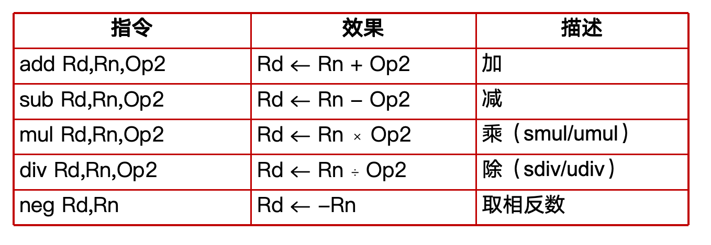
- 移位指令：
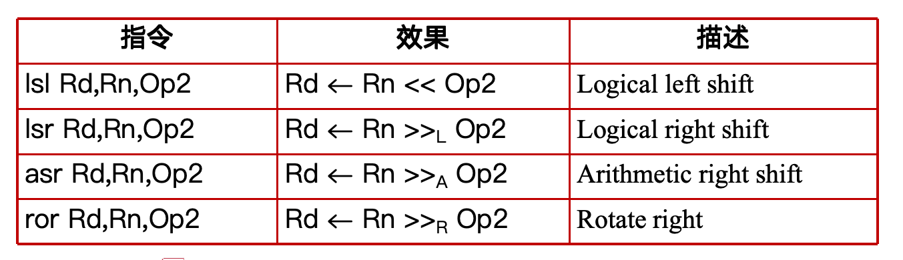
- 逻辑运算指令：
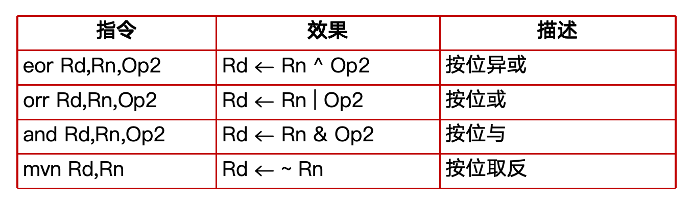
- Modified Register：如 add x2, x2, x2, lsl #1
- 对操作数进行移位：如 eor w0, w8, w8, asr #16
- 对操作数进行位扩展：如 add x19, x19, w0, sxtw
- 无符号扩展：uxtb, uxth, uxtw
- 符号扩展：sxtb, sxth, sxtw
- 访存指令：
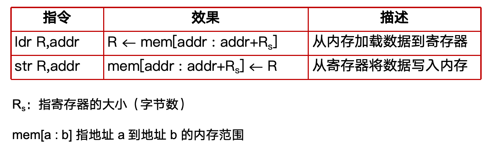
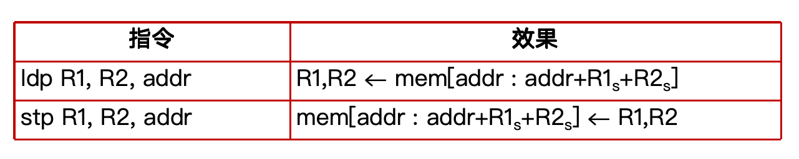
- 寻址模式：
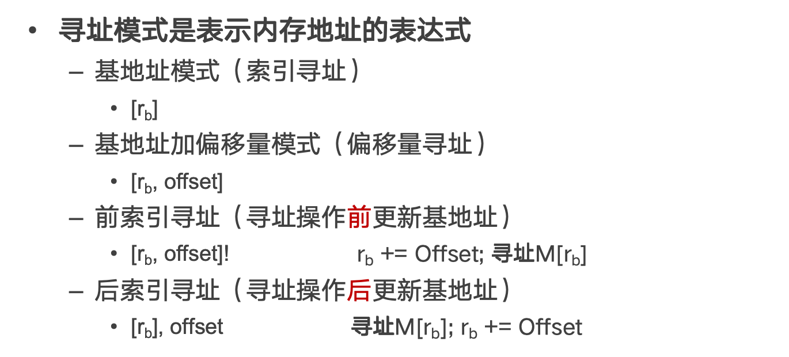
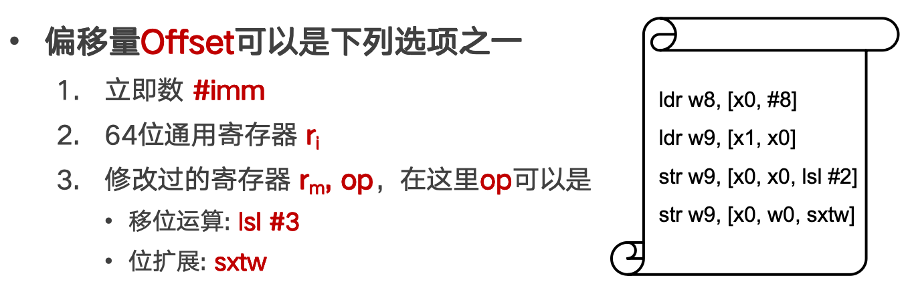
条件码与分支指令
- 条件码：一组标志位的统称，由 PSTATE 寄存器维护
- N（Negative）、Z（Zero）、C（Carry）、V（Overflow）
- 条件码的设置：
- 带有 s 后缀的算术或逻辑运算指令（如subs、adds）
- 比较指令：
- cmp：操作数之差；如 cmp x0, x1
- cmn：操作数之和；如 cmn x0, x1
- tst：操作数相与；如 tst x0, x1
- 跳转条件：
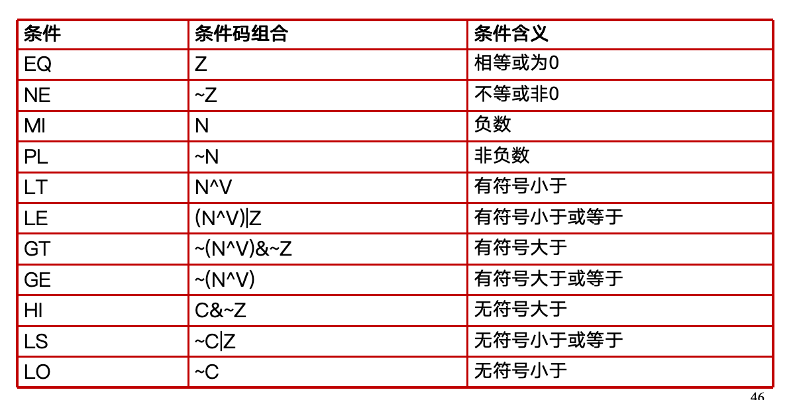
- 跳转指令：
- 直接分支指令：以标签对应的地址作为跳转目标
- 无条件分支指令：b <label>
- 有条件分支指令：bcond <label>，如 beq，bne，ble
- 间接分支指令：以寄存器中的地址作为跳转目标
- br reg，如 br x0
- 直接分支指令：以标签对应的地址作为跳转目标
函数调用
- 函数调用指令：
- bl label (直接调用，调用函数)
- blr Rn (间接调用，调用函数指针)
- 功能：将返回地址存储在链接寄存器 LR (即 x30 寄存器)，并跳转到被调用者的入口地址
- 函数返回指令：
- ret (不区分直接调用与间接调用)
- 功能：跳转到返回地址（链接寄存器 LR）
- 函数栈桢：函数在运行期间使用的一段内存
- 作用：存放其局部状态，包括返回地址、上一个栈桢的位置、局部变量
- SP（Stack Pointer）寄存器：CPU 中的另一个特殊寄存器，指向栈顶（低地址）
- 帧指针 FP：保存在 x29 寄存器中
1 | |
函数参数与返回值
- 调用者使用 x0 ~ x7 寄存器传递前 8 个参数
- 第 8 个之后的参数，按声明顺序从右到左压到栈上，被调用者通过 SP + 偏移量访问
- 被调用者使用 x0 寄存器传递返回值
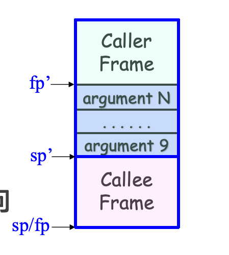
寄存器保存

- 调用者保存的寄存器包括 x9 ~ x15
- 调用者在调用前按需进行保存，在被调用者返回后恢复这些寄存器的值
- 被调用者可以随意使用（这些寄存器调用后的值可能发生改变）
- 被调用者保存的寄存器包括 x19 ~ x28
- 被调用者在使用前进行保存，在返回前进行恢复
- 调用者视角下，这些寄存器的值在函数调用前后不会改变
局部变量
- 局部变量存放在函数栈桢中：在分配栈帧时被一起分配，在返回前释放栈帧时释放，通过 SP 相对地址引用
Lecture 3: ARM 汇编 - 系统 ISA
特权级别
- ARM 特权级：EL0（应用程序）、EL1（操作系统）
- CurrentEL 寄存器：CPU 当前特权级别，属于 PSTATE（状态寄存器）
- 用户态与内核态：
- 用户态：只能使用用户 ISA
- 内核态：可以同时使用系统 ISA 和用户ISA
- 操作系统往往同时包含内核态与用户态的代码
- 常见寄存器在不同特权级的可见情况：
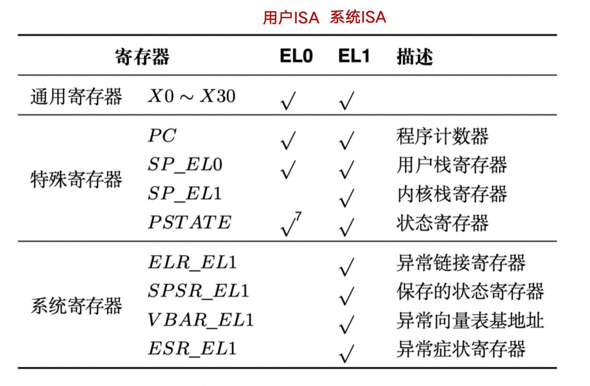
特权级切换
svc/eret指令：在控制流跳转的同时进行特权级切换- 同步异常：执行当前指令触发异常
- 第一类：用户程序主动发起：
svc指令（OS 利用eret指令返回） - 第二类：非主动，例如用户程序意外访问空指针：普通
ldr指令（OS “杀死”出错程序）
- 第一类：用户程序主动发起：
- 异步异常：CPU 收到中断信号
- 从外设发来的中断，例如屏幕点击、鼠标、收到网络包
- CPU 时钟中断，例如定时器超时
- 异常处理函数：运行在内核态，完成异常处理后可能会：
- 回到发生异常时正在执行的指令（如：缺页异常）
- 回到发生异常时的下一条指令（如：系统调用）
- 切换到其它进程执行（如：除零、访问空指针）
- 异常向量表：CPU 找到异常处理函数
- OS 内核预先在一张表中准备好不同类型异常的处理函数，基地址存储在 VBAR_EL1 寄存器中
- CPU 在异常发生时自动跳转到相应处理函数
- 实现异常向量表的设置：是系统初始化的重要工作之一
- 在开启中断和启动第一个应用之前
msr vbar_el1, x0，是内核态才能使用的指令，内核才能访问的寄存器
- 实现对不同异常的处理函数：
mrs x1, esr_el1，内核通过 ESR_EL1 寄存器读取陷入内核的原因
内核态与用户态的切换
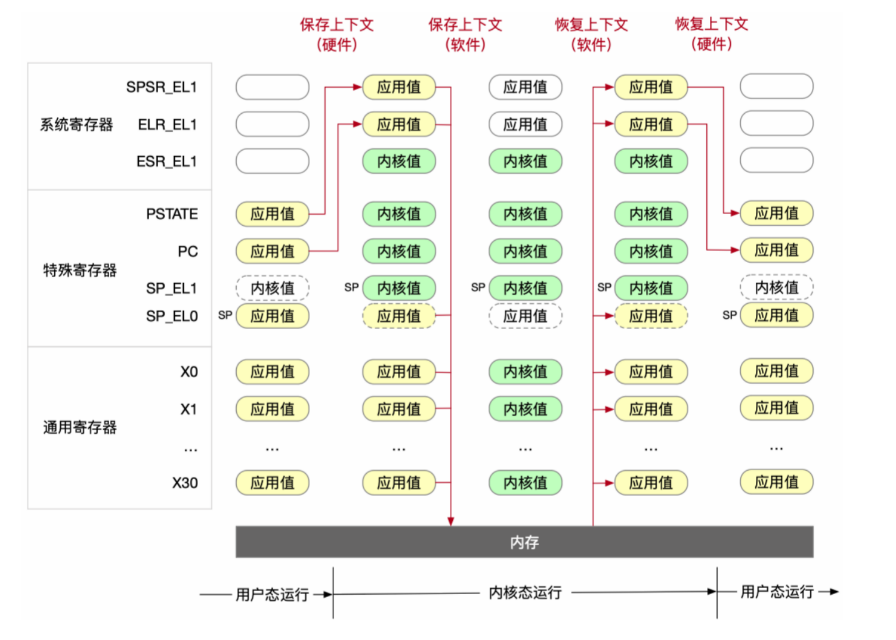
- 处理器在切换过程中的任务：
- 将发生异常事件的指令地址保存在 ELR_EL1 中
- 将异常事件的原因保存在 ESR_EL1
- 将处理器的当前状态（即 PSTATE）保存在 SPSR_EL1
- 栈寄存器不再使用 SP_EL0（用户态栈寄存器），开始使用 SP_EL1
- 修改 PSTATE 寄存器中的特权级标志位，设置为内核态
- 找到异常处理函数的入口地址，并将该地址写入 PC，开始运行操作系统
- 从内核态返回到用户态：
- 将 SPSR_EL1 中的处理器状态写入 PSTATE 中，处理器状态也从 EL1 切换到 EL0
- 栈寄存器不再使用 SP_EL1，开始使用 SP_EL0
- 将 ELR_EL1 中的地址写入 PC，并执行应用程序代码
- 操作系统在切换过程中的任务：将属于应用程序的 CPU 状态保存到内存中
- 用于之后恢复应用程序继续运行
- 处理器上下文：应用程序需要保存的运行状态，即应用程序在完成切换后恢复执行所需的最小处理器状态集合，包括：
- 通用寄存器 x0 - x30
- 特殊寄存器，主要包括 PC、SP 和 PSTATE
- 系统寄存器，包括页表基地址寄存器等
系统调用
- 硬件提供了一对指令
svc/eret指令在用户态/内核态间切换 - 系统调用：用户与操作系统之间，类似于过程调用的接口；通过受限的方式访问内核提供的服务
- 参数传递：最多允许 8 个参数（x0-x7 寄存器），x8 用于存放系统调用编号
- 若寄存器放不下，只能通过内存传参，将指针放在寄存器中传给内核（存在安全的隐患）
- 返回值：通过寄存器向应用传递返回值，存放于 x0 寄存器中，一般设置为 -errno
系统调用优化：VDSO（Virtual Dynamic Shared Object）
- 动机：系统调用的时延不可忽略；系统调用实际执行逻辑很简单
- 特权级切换造成的时间开销；如果没有特权级切换，那么就不需要保存恢复状态
- 方法：内核将一部分数据通过只读的形式共享给应用
- 例子：将 gettimeofday 的代码加载到一块与应用共享的内存页，Time 的值同样映射到用户态空间（只读）
系统调用优化：Flex-SC（Flexible System Call Scheduling with Exception-Less System Calls）
- 动机：进一步降低系统调用的时延，在不切换状态的情况下实现系统调用
- 方法：允许应用以“向某一块内存页写入请求”的方式发起系统调用，并通过轮询来等待系统调用完成
- 内核独占一个 CPU 核心，通过轮询来等待用户的请求，然后执行系统调用，并将返回值写入同一块内存页
Lecture 4: 从应用视角看操作系统抽象
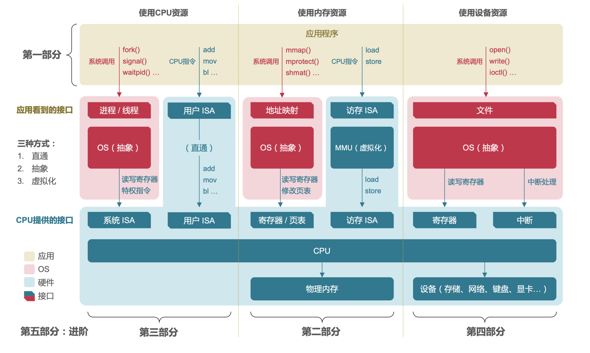
进程
- 分时复用有限的 CPU 资源
- 让多个应用程序轮流使用处理器核心
- 何时切换：操作系统决定（运行时间片）
- 高频切换：看起来是多个应用“同时”执行
- 应用程序与进程：
- 通常一个应用程序对应一个进程：
- 多进程程序：应用程序亦可自行创建新进程
- 进程的状态数据：
- 进程标识号（Process ID， PID）
- 运行状态：处理器上下文（CPU Context）
- 地址空间
- 打开的文件
进程切换
- 处理器上下文：操作系统为每个进程维护处理器上下文
- 具体包括：PC 寄存器值，栈寄存器值，通用寄存器值，状态寄存器值
- 进程切换的时机：异常导致的上下文切换、用户执行系统调用并进入内核
常见的进程相关的接口
getpid()：返回调用进程的 PIDgetppid()：返回调用进程父进程（创建该进程的进程）的 PIDexit()：终止进程并带上一个 status 状态，无返回值fork()：父进程创建新的子进程，调用一次返回两次- 返回值：子进程为 0，父进程为子进程 PID，出错为 -1
execve()：加载和运行，只调用一次，且永远不会返回- filename:可执行文件名，argv:参数列表，envp:环境变量列表
- 仅仅在运行报错的时候，返回调用程序
waitpid()：等待子进程终止后，内核回收子进程- 进程的终止：进程终止后，内核不会立刻销毁该进程
- 进程以终止态存在，等待父进程回收
- 当父进程回收终止的子进程：
- 内核把子进程的 exit 状态传递给父进程
- 内核移除子进程，此时子进程才被真正回收
- 终止状态下还未被回收的进程就是僵尸进程
- 如果父进程在自己终止前没有回收僵尸子进程：
- 内核会安排 init 进程回收这些子进程
- init 进程：PID 为 1，在系统初始化时由内核创建
内存

- 虚拟地址空间：
- 应用进程使用虚拟地址访问内存
- 所有应用进程的虚拟地址空间都是统一的（方便开发）
- 地址翻译：
- CPU 按照 OS 配置的规则把虚拟地址翻译成物理地址
- 翻译对于应用进程是不可见的（无需关心）
- 虚拟内存的优势：
- 独立而统一的地址空间
- 提高内存资源利用率、突破物理内存容量限制
ELF 文件格式
- 目标文件：可执行目标文件、可重定位目标文件（.o）、共享目标文件（.so）
- ELF：可执行可链接格式，目标文件的标准二进制格式

- ELF 头部：通常用于存元数据，包括 Magic number、类型（.o, .so, 可执行）、机器架构、字节顺序（大小端）、节头部表的位置（文件内偏移）等
- 节头部表：每一个节都有一个节头部（节头部表的一项）描述
- 节：ELF 文件中除了头部和头部表划分为若干区域，每一个节在文件中是一块连续的字节（可能为空），互不重叠
- 用以调试的节：
- ELF 字符串表（.strtab）：记录一系列 C 风格字符串，表示符号名或节名
- .debug：调试符号表，包括变量（全局、局部）、typedef、C 源文件
- .line：C 源文件的行数与 .text 节中指令的映射
- 代码和数据节：
- .text：代码
- .rodata：只读数据
- .data：初始化的全局变量和静态变量
- .bss：未初始化的全局变量和静态变量（不占文件空间，运行时分配内存）
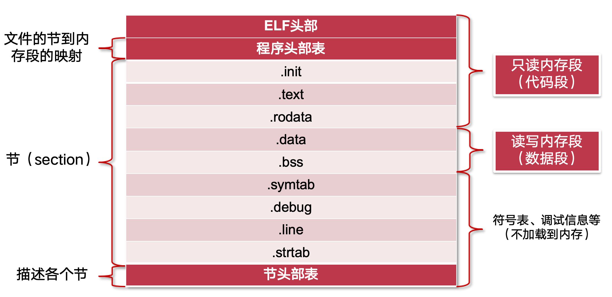
- 可执行目标文件的 ELF 头部：包含整体信息、程序入口 (e_entry)、程序头部表信息
文件
-
Unix 文件：是一串字节序列
- 所有 IO 设备都被抽象成文件
- Unix 提供一个基于文件的底层应用接口，即 Unix IO
- 所有输入/输出都是通过读/写文件完成，让所有输入输出都有统一的表现方式
-
普通文件（文件类型1）：包含任意数据
- 从应用程序的角度来看，有文本文件和二进制文件
- 从内核的角度来看，没有区别
-
目录（文件类型2）：由一组链接构成，每个链接将一个文件名映射到一个文件(或目录)
- 每个目录至少有两个链接：
- . (dot)：到文件夹本身的链接
- … (dot-dot)：到上一层文件夹的链接
- 目录相关指令：mkdir、ls、rmdir等
- 每个目录至少有两个链接：
-
目录层级：Linux 内核使用层次化目录来组织所有文件
- /：代表根目录
- 每个文件都是根目录直接或间接的后代
-
其他文件类型：套接字、命名管道、符号连接、字符/块设备
-
打开文件：应用准备访问一个 IO 设备
- 内核打开相关文件，并返回一个非负整数，作为文件标识符(fd)
- fd 代表该文件，用于之后对文件进行操作
- 内核跟踪记录每个进程的所有打开文件的信息
- 对于每个打开文件，维护一个文件内偏移 k
- 应用可以通过seek函数，显式改变当前文件内偏移 k
- 应用只需要记录内核返回的文件标识符
- 内核打开相关文件，并返回一个非负整数，作为文件标识符(fd)
-
关闭文件：不再需要访问文件
- 内核操作如下
- 释放在文件打开时创建的数据结构
- 把文件标识符返回到可用标识符池
- 进程终止时，内核会关闭所有打开的文件、释放内存资源
- 内核操作如下
-
读写文件：读操作
- 从文件中复制 m>0 个字节到内存中
-从当前文件的位置 k 开始, 并更新 k+=m - 如果从 k 开始到文件末尾的长度小于 m，触发一个条件 end-of-file(EOF)
- EOF 可以被应用检测，但文件末尾实际上不存在 EOF 字符
- 从文件中复制 m>0 个字节到内存中
-
文件：对所有设备的抽象（存储设备、网络设备、其他设备）
参考资料
本文参考上海交通大学并行与分布式系统研究所（IPADS）操作系统课程 CS3601 华志超老师的 PPT 课件整理。
操作系统 SJTU 版(1)：概述
https://cny123222.github.io/2025/10/02/操作系统-SJTU-版-1-：概述/